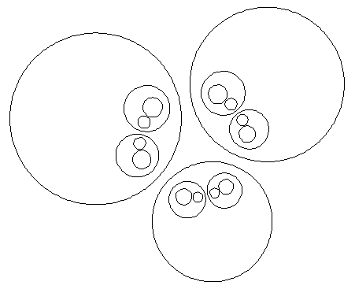

| Some care is needed to show that the radii of these inverted circles goes to 0, so long as A, B, and C are disjoint. Click to return to the earlier picture. |
|  |
| The limit set is the circle orthogonal to these three circles. |
Return to Three Circle Limit Sets.